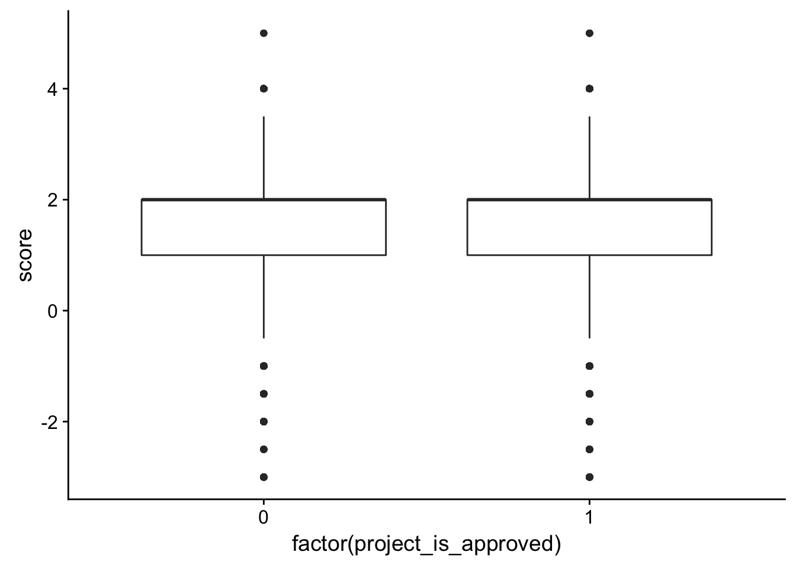
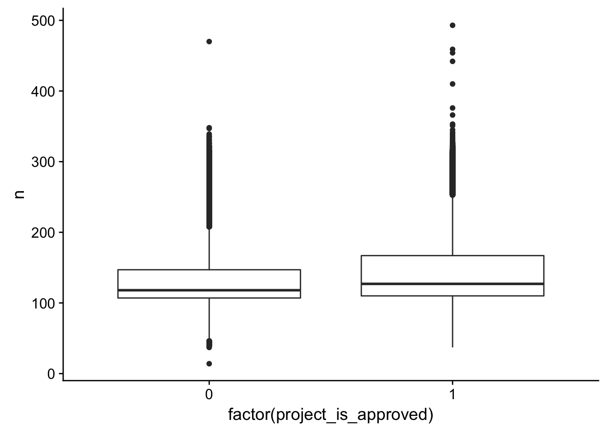
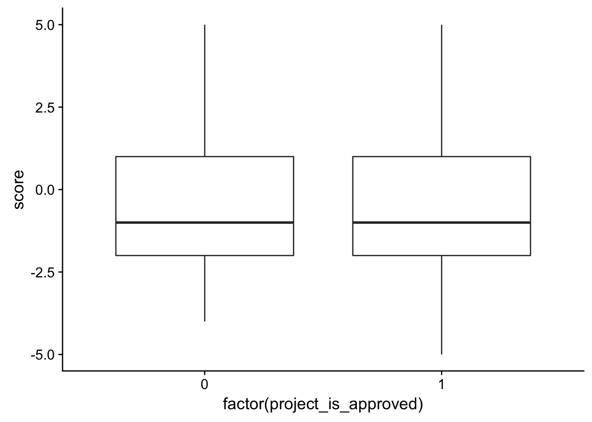

Untitled
First Last
YYYY-MM-DD
Last updated: 2018-03-29
Code version: 0989d34
Introduction
The following RMarkdown file uses files from Donors Choose and performs preliminary sentiment analysis. The sentiment analysis was aided by the code and explanations provided in https://www.tidytextmining.com/.
Get Started
# Libraries
library(dplyr)
Attaching package: 'dplyr'The following objects are masked from 'package:stats':
filter, lagThe following objects are masked from 'package:base':
intersect, setdiff, setequal, unionlibrary(stringr)
library(tidytext)Warning: package 'tidytext' was built under R version 3.4.4library(ggplot2)
library(tidyverse)── Attaching packages ────────────────────────────────────────────────────────────── tidyverse 1.2.1 ──✔ tibble 1.4.2 ✔ readr 1.1.1
✔ tidyr 0.7.2 ✔ purrr 0.2.4
✔ tibble 1.4.2 ✔ forcats 0.2.0── Conflicts ───────────────────────────────────────────────────────────────── tidyverse_conflicts() ──
✖ dplyr::filter() masks stats::filter()
✖ dplyr::lag() masks stats::lag()library(cowplot)
Attaching package: 'cowplot'The following object is masked from 'package:ggplot2':
ggsave# Open the datasets
train <- read.csv("~/Dropbox/DonorsChoose/train.csv")
test <- read.csv("~/Dropbox/DonorsChoose/test.csv")
resources <- read.csv("~/Dropbox/DonorsChoose/resources.csv")Data exploration on the title
Make data into a tibble and find out how many words are in the title
# First, we want to select project id, title name, and if the project was approved or not
id_title <- c(1, 16, 9)
train_text <- train[,id_title]
train_text[,1] <- as.character(train_text[,1])
train_text[,2] <- as.numeric(train_text[,2])
train_text[,3] <- as.character(train_text[,3])
train_text <- as.tibble(train_text)
tidy_books <- train_text %>% unnest_tokens(word, project_title)
# Find out how many words the title is
freq_table <- count(tidy_books, id)
title_word_count_by_project <- left_join(freq_table, train_text[,1:2], by = c("id"))
ggplot(title_word_count_by_project, aes(x = factor(project_is_approved), y = n)) + geom_boxplot()ggplot(title_word_count_by_project, aes(x = n, fill = factor(project_is_approved))) +
geom_bar(position = "fill")Take out common words (“stop words”)
# Take out stop (common) words
tidy_books <- tidy_books %>%
anti_join(stop_words)Joining, by = "word"freq_table <- count(tidy_books, id)
title_word_count_by_project <- left_join(freq_table, train_text[,1:2], by = c("id"))
ggplot(title_word_count_by_project, aes(x = factor(project_is_approved), y = n)) + geom_boxplot()title_n <- ggplot(title_word_count_by_project, aes(x = n, fill = factor(project_is_approved))) +
geom_bar(position = "fill") + ggtitle("Number of words by approval status")
# Get a sense of which words are the most common
tidy_books %>%
count(word, sort = TRUE) # A tibble: 22,308 x 2
word n
<chr> <int>
1 learning 15587
2 technology 9677
3 classroom 9590
4 students 8486
5 reading 8053
6 books 6815
7 seating 6618
8 math 5520
9 flexible 5393
10 learn 4927
# ... with 22,298 more rowstidy_books %>%
count(word, sort = TRUE) %>%
filter(n > 2000) %>%
mutate(word = reorder(word, n)) %>%
ggplot(aes(word, n)) +
geom_col() +
xlab(NULL) +
coord_flip()Sentiment analysis
AFINN
janeaustensentiment <- tidy_books %>% inner_join(get_sentiments("afinn"))Joining, by = "word"summary(janeaustensentiment) id project_is_approved word
Length:54170 Min. :0.0000 Length:54170
Class :character 1st Qu.:1.0000 Class :character
Mode :character Median :1.0000 Mode :character
Mean :0.8403
3rd Qu.:1.0000
Max. :1.0000
score
Min. :-4.000
1st Qu.: 1.000
Median : 2.000
Mean : 1.609
3rd Qu.: 2.000
Max. : 5.000 janeaustensentiment[1:10,]# A tibble: 10 x 4
id project_is_approved word score
<chr> <dbl> <chr> <int>
1 p036502 1.00 super 3
2 p039565 0 calm 2
3 p185307 0 inspired 2
4 p185307 0 increase 1
5 p185307 0 gain 2
6 p013780 1.00 clean 2
7 p063374 1.00 reach 1
8 p103285 1.00 active 1
9 p181781 1.00 fabulous 4
10 p114989 1.00 fidgety -2# Is there a correlation between the average score and whether or not it gets accepted?
check_corr_titles <- aggregate(janeaustensentiment$score, by = list(janeaustensentiment$id), FUN = mean)
colnames(check_corr_titles) <- c("id", "score")
check_corr_titles2 <- left_join(check_corr_titles, train_text[,1:2], by = c("id"))
ggplot(check_corr_titles2, aes(x = factor(project_is_approved), y = score)) + geom_boxplot()title_a <- ggplot(check_corr_titles2,aes(x = score, fill = factor(project_is_approved))) +
geom_bar(position = "fill") + ggtitle("Avg. AFINN sentiment score by approval status")
# Is there a relationship between the most positive word and whether it gets approved?
check_corr_titles <- aggregate(janeaustensentiment$score, by = list(janeaustensentiment$id), FUN = max)
colnames(check_corr_titles) <- c("id", "score")
check_corr_titles2 <- left_join(check_corr_titles, train_text[,1:2], by = c("id"))
ggplot(check_corr_titles2, aes(x = factor(project_is_approved), y = score)) + geom_boxplot()title_b <- ggplot(check_corr_titles2,aes(x = score, fill = factor(project_is_approved))) +
geom_bar(position = "fill") + ggtitle("Max. AFINN sentiment score by approval status")
# Is there a relationship between the most negative word and whether it gets approved?
check_corr_titles <- aggregate(janeaustensentiment$score, by = list(janeaustensentiment$id), FUN = min)
colnames(check_corr_titles) <- c("id", "score")
check_corr_titles2 <- left_join(check_corr_titles, train_text[,1:2], by = c("id"))
ggplot(check_corr_titles2, aes(x = factor(project_is_approved), y = score)) + geom_boxplot()title_c <- ggplot(check_corr_titles2,aes(x = score, fill = factor(project_is_approved))) +
geom_bar(position = "fill") + ggtitle("Min. AFINN sentiment score by approval status")
# Is there a relationship between the most common value and whether it gets approved?
check_corr_titles <- aggregate(janeaustensentiment$score, by = list(janeaustensentiment$id), FUN = median)
colnames(check_corr_titles) <- c("id", "score")
check_corr_titles2 <- left_join(check_corr_titles, train_text[,1:2], by = c("id"))
ggplot(check_corr_titles2, aes(x = factor(project_is_approved), y = score)) + geom_boxplot()title_d <- ggplot(check_corr_titles2,aes(x = score, fill = factor(project_is_approved))) +
geom_bar(position = "fill") + ggtitle("Median AFINN sentiment score by approval status")BING
# Sentiment analysis - bing
janeaustensentiment <- tidy_books %>% inner_join(get_sentiments("bing"))Joining, by = "word"janeaustensentiment[1:10,]# A tibble: 10 x 4
id project_is_approved word sentiment
<chr> <dbl> <chr> <chr>
1 p036502 1.00 super positive
2 p039565 0 calm positive
3 p185307 0 gain positive
4 p013780 1.00 clean positive
5 p181781 1.00 fabulous positive
6 p114989 1.00 wobble negative
7 p114989 1.00 fidgety negative
8 p226941 1.00 boost positive
9 p173555 0 love positive
10 p055350 1.00 flexible positive # Is there a connection between the average score and whether or not it gets accepted?
length(which(janeaustensentiment$project_is_approved == 1 & janeaustensentiment$sentiment == "positive"))[1] 43948length(which(janeaustensentiment$project_is_approved == 0 & janeaustensentiment$sentiment == "positive"))[1] 8586length(which(janeaustensentiment$project_is_approved == 1 & janeaustensentiment$sentiment == "negative"))[1] 9548length(which(janeaustensentiment$project_is_approved == 0 & janeaustensentiment$sentiment == "negative"))[1] 1532bingnegative <- get_sentiments("bing") %>%
filter(sentiment == "negative")
wordcounts <- tidy_books %>%
group_by(id) %>%
summarize(words = n())
sentiment_ratio <- tidy_books %>%
semi_join(bingnegative) %>%
group_by(id, project_is_approved) %>%
summarize(negativewords = n()) %>%
left_join(wordcounts, by = c("id")) %>%
mutate(ratio = negativewords/words) %>%
top_n(1) %>%
ungroup()Joining, by = "word"Selecting by ratioggplot(sentiment_ratio, aes(x = factor(project_is_approved), y = ratio)) + geom_boxplot()NRC
janeaustensentiment <- tidy_books %>% inner_join(get_sentiments("nrc"))Joining, by = "word"janeaustensentiment[1:20,]# A tibble: 20 x 4
id project_is_approved word sentiment
<chr> <dbl> <chr> <chr>
1 p036502 1.00 word positive
2 p036502 1.00 word trust
3 p039565 0 calm positive
4 p039565 0 dance joy
5 p039565 0 dance positive
6 p039565 0 dance trust
7 p233823 1.00 learn positive
8 p185307 0 inspired joy
9 p185307 0 inspired positive
10 p185307 0 inspired surprise
11 p185307 0 inspired trust
12 p185307 0 increase positive
13 p185307 0 gain anticipation
14 p185307 0 gain joy
15 p185307 0 gain positive
16 p013780 1.00 clean joy
17 p013780 1.00 clean positive
18 p013780 1.00 clean trust
19 p013780 1.00 culinary positive
20 p013780 1.00 culinary trust Data exploration on essay 1
Make data into a tibble and find out how many words are in essay 1
# First, we want to select project id, title name, and if the project was approved or not
id_title <- c(1, 16, 10)
train_text <- train[,id_title]
train_text[,1] <- as.character(train_text[,1])
train_text[,2] <- as.numeric(train_text[,2])
train_text[,3] <- as.character(train_text[,3])
train_text <- as.tibble(train_text)
tidy_books <- train_text %>% unnest_tokens(word, project_essay_1)
# Find how many words in essay1
freq_table <- count(tidy_books, id)
title_word_count_by_project <- left_join(freq_table, train_text[,1:2], by = c("id"))
ggplot(title_word_count_by_project, aes(x = factor(project_is_approved), y = n)) + geom_boxplot()ggplot(title_word_count_by_project, aes(x = n, fill = factor(project_is_approved))) +
geom_bar(position = "fill")Take out common words (“stop words”)
# Take out stop (common) words
tidy_books <- tidy_books %>%
anti_join(stop_words)Joining, by = "word"freq_table <- count(tidy_books, id)
title_word_count_by_project <- left_join(freq_table, train_text[,1:2], by = c("id"))
ggplot(title_word_count_by_project, aes(x = factor(project_is_approved), y = n)) + geom_boxplot()essay1_n <- ggplot(title_word_count_by_project, aes(x = n, fill = factor(project_is_approved))) +
geom_bar(position = "fill")
# Get a sense of which words are the most common
tidy_books %>%
count(word, sort = TRUE) # A tibble: 46,131 x 2
word n
<chr> <int>
1 students 610304
2 school 310246
3 learning 136342
4 learn 118186
5 classroom 117935
6 love 77494
7 day 74593
8 grade 57162
9 class 56279
10 free 51354
# ... with 46,121 more rowstidy_books %>%
count(word, sort = TRUE) %>%
filter(n > 20000) %>%
mutate(word = reorder(word, n)) %>%
ggplot(aes(word, n)) +
geom_col() +
xlab(NULL) +
coord_flip()Sentiment analysis
AFINN
janeaustensentiment <- tidy_books %>% inner_join(get_sentiments("afinn"))Joining, by = "word"summary(janeaustensentiment) id project_is_approved word
Length:1144903 Min. :0.00 Length:1144903
Class :character 1st Qu.:1.00 Class :character
Mode :character Median :1.00 Mode :character
Mean :0.85
3rd Qu.:1.00
Max. :1.00
score
Min. :-4.000
1st Qu.: 1.000
Median : 2.000
Mean : 1.394
3rd Qu.: 2.000
Max. : 5.000 janeaustensentiment[1:10,]# A tibble: 10 x 4
id project_is_approved word score
<chr> <dbl> <chr> <int>
1 p036502 1.00 risk -2
2 p036502 1.00 obstacles -2
3 p036502 1.00 excited 3
4 p036502 1.00 exposed -1
5 p036502 1.00 motivated 2
6 p036502 1.00 hard -1
7 p036502 1.00 excited 3
8 p039565 0 rich 2
9 p039565 0 free 1
10 p039565 0 blocks -1# Is there a relationship between the average score and whether or not it gets accepted?
check_corr_titles <- aggregate(janeaustensentiment$score, by = list(janeaustensentiment$id), FUN = mean)
colnames(check_corr_titles) <- c("id", "score")
check_corr_titles2 <- left_join(check_corr_titles, train_text[,1:2], by = c("id"))
ggplot(check_corr_titles2, aes(x = factor(project_is_approved), y = score)) + geom_boxplot()
essay1_a <- ggplot(check_corr_titles2,aes(x = score, fill = factor(project_is_approved))) +
geom_bar(position = "fill")
# Is there a relationship between the most positive word and whether it gets approved?
check_corr_titles <- aggregate(janeaustensentiment$score, by = list(janeaustensentiment$id), FUN = max)
colnames(check_corr_titles) <- c("id", "score")
check_corr_titles2 <- left_join(check_corr_titles, train_text[,1:2], by = c("id"))
ggplot(check_corr_titles2, aes(x = factor(project_is_approved), y = score)) + geom_boxplot()essay1_b <- ggplot(check_corr_titles2,aes(x = score, fill = factor(project_is_approved))) +
geom_bar(position = "fill")
# Is there a relationship between the most negative word and whether it gets approved?
check_corr_titles <- aggregate(janeaustensentiment$score, by = list(janeaustensentiment$id), FUN = min)
colnames(check_corr_titles) <- c("id", "score")
check_corr_titles2 <- left_join(check_corr_titles, train_text[,1:2], by = c("id"))
ggplot(check_corr_titles2, aes(x = factor(project_is_approved), y = score)) + geom_boxplot()essay1_c <- ggplot(check_corr_titles2,aes(x = score, fill = factor(project_is_approved))) +
geom_bar(position = "fill")
# Is there a relationship between the most common value and whether it gets approved?
check_corr_titles <- aggregate(janeaustensentiment$score, by = list(janeaustensentiment$id), FUN = median)
colnames(check_corr_titles) <- c("id", "score")
check_corr_titles2 <- left_join(check_corr_titles, train_text[,1:2], by = c("id"))
ggplot(check_corr_titles2, aes(x = factor(project_is_approved), y = score)) + geom_boxplot()
essay1_d <- ggplot(check_corr_titles2,aes(x = score, fill = factor(project_is_approved))) +
geom_bar(position = "fill")Data exploration on essay 2
Make data into a tibble and find out how many words are in essay 2
# First, we want to select project id, essay 2, and if the project was approved or not
id_title <- c(1, 16, 11)
train_text <- train[,id_title]
train_text[,1] <- as.character(train_text[,1])
train_text[,2] <- as.numeric(train_text[,2])
train_text[,3] <- as.character(train_text[,3])
train_text <- as.tibble(train_text)
tidy_books <- train_text %>% unnest_tokens(word, project_essay_2)
# Find how many words in essay1
freq_table <- count(tidy_books, id)
title_word_count_by_project <- left_join(freq_table, train_text[,1:2], by = c("id"))
ggplot(title_word_count_by_project, aes(x = factor(project_is_approved), y = n)) + geom_boxplot()
ggplot(title_word_count_by_project, aes(x = n, fill = factor(project_is_approved))) +
geom_bar(position = "fill")Take out common words (“stop words”)
# Take out stop (common) words
tidy_books <- tidy_books %>%
anti_join(stop_words)Joining, by = "word"freq_table <- count(tidy_books, id)
title_word_count_by_project <- left_join(freq_table, train_text[,1:2], by = c("id"))
ggplot(title_word_count_by_project, aes(x = factor(project_is_approved), y = n)) + geom_boxplot()essay2_n <- ggplot(title_word_count_by_project, aes(x = n, fill = factor(project_is_approved))) +
geom_bar(position = "fill")
# Get a sense of which words are the most common
tidy_books %>%
count(word, sort = TRUE) # A tibble: 64,340 x 2
word n
<chr> <int>
1 students 670368
2 classroom 158719
3 learning 154165
4 reading 105082
5 school 104381
6 learn 88350
7 books 81544
8 skills 76292
9 technology 67841
10 time 66121
# ... with 64,330 more rowstidy_books %>%
count(word, sort = TRUE) %>%
filter(n > 20000) %>%
mutate(word = reorder(word, n)) %>%
ggplot(aes(word, n)) +
geom_col() +
xlab(NULL) +
coord_flip()Sentiment analysis
AFINN
janeaustensentiment <- tidy_books %>% inner_join(get_sentiments("afinn"))Joining, by = "word"summary(janeaustensentiment) id project_is_approved word
Length:1057401 Min. :0.0000 Length:1057401
Class :character 1st Qu.:1.0000 Class :character
Mode :character Median :1.0000 Mode :character
Mean :0.8498
3rd Qu.:1.0000
Max. :1.0000
score
Min. :-5.000
1st Qu.: 1.000
Median : 2.000
Mean : 1.368
3rd Qu.: 2.000
Max. : 5.000 janeaustensentiment[1:10,]# A tibble: 10 x 4
id project_is_approved word score
<chr> <dbl> <chr> <int>
1 p036502 1.00 favorite 2
2 p036502 1.00 dream 1
3 p036502 1.00 struggling -2
4 p039565 0 excitement 3
5 p233823 1.00 wonderful 4
6 p233823 1.00 advanced 1
7 p185307 0 inspired 2
8 p185307 0 active 1
9 p185307 0 gaining 2
10 p185307 0 inspired 2# Is there a relationship between the average score and whether or not it gets accepted?
check_corr_titles <- aggregate(janeaustensentiment$score, by = list(janeaustensentiment$id), FUN = mean)
colnames(check_corr_titles) <- c("id", "score")
check_corr_titles2 <- left_join(check_corr_titles, train_text[,1:2], by = c("id"))
ggplot(check_corr_titles2, aes(x = factor(project_is_approved), y = score)) + geom_boxplot()essay2_a <- ggplot(check_corr_titles2,aes(x = score, fill = factor(project_is_approved))) +
geom_bar(position = "fill")
# Is there a relationship between the most positive word and whether it gets approved?
check_corr_titles <- aggregate(janeaustensentiment$score, by = list(janeaustensentiment$id), FUN = max)
colnames(check_corr_titles) <- c("id", "score")
check_corr_titles2 <- left_join(check_corr_titles, train_text[,1:2], by = c("id"))
ggplot(check_corr_titles2, aes(x = factor(project_is_approved), y = score)) + geom_boxplot()essay2_b <-ggplot(check_corr_titles2,aes(x = score, fill = factor(project_is_approved))) +
geom_bar(position = "fill")
# Is there a relationship between the most negative word and whether it gets approved?
check_corr_titles <- aggregate(janeaustensentiment$score, by = list(janeaustensentiment$id), FUN = min)
colnames(check_corr_titles) <- c("id", "score")
check_corr_titles2 <- left_join(check_corr_titles, train_text[,1:2], by = c("id"))
ggplot(check_corr_titles2, aes(x = factor(project_is_approved), y = score)) + geom_boxplot()
essay2_c <-ggplot(check_corr_titles2,aes(x = score, fill = factor(project_is_approved))) +
geom_bar(position = "fill")
# Is there a relationship between the most common value and whether it gets approved?
check_corr_titles <- aggregate(janeaustensentiment$score, by = list(janeaustensentiment$id), FUN = median)
colnames(check_corr_titles) <- c("id", "score")
check_corr_titles2 <- left_join(check_corr_titles, train_text[,1:2], by = c("id"))
ggplot(check_corr_titles2, aes(x = factor(project_is_approved), y = score)) + geom_boxplot()essay2_d <- ggplot(check_corr_titles2,aes(x = score, fill = factor(project_is_approved))) +
geom_bar(position = "fill")Summary Plots
plot_grid(title_n, essay1_n, essay2_n, labels = c("A", "B", "C"), ncol = 1)plot_grid(title_a, essay1_a, essay2_a, labels = c("A", "B", "C"), ncol = 1)Warning: position_stack requires non-overlapping x intervals
Warning: position_stack requires non-overlapping x intervals
Warning: position_stack requires non-overlapping x intervalsplot_grid(title_b, essay1_b, essay2_b, labels = c("A", "B", "C"), ncol = 1)plot_grid(title_c, essay1_c, essay2_c, labels = c("A", "B", "C"), ncol = 1)plot_grid(title_d, essay1_d, essay2_d, labels = c("A", "B", "C"), ncol = 1)Session information
sessionInfo()R version 3.4.3 (2017-11-30)
Platform: x86_64-apple-darwin15.6.0 (64-bit)
Running under: OS X El Capitan 10.11.6
Matrix products: default
BLAS: /Library/Frameworks/R.framework/Versions/3.4/Resources/lib/libRblas.0.dylib
LAPACK: /Library/Frameworks/R.framework/Versions/3.4/Resources/lib/libRlapack.dylib
locale:
[1] en_US.UTF-8/en_US.UTF-8/en_US.UTF-8/C/en_US.UTF-8/en_US.UTF-8
attached base packages:
[1] stats graphics grDevices utils datasets methods base
other attached packages:
[1] bindrcpp_0.2 cowplot_0.9.2 forcats_0.2.0 purrr_0.2.4
[5] readr_1.1.1 tidyr_0.7.2 tibble_1.4.2 tidyverse_1.2.1
[9] ggplot2_2.2.1 tidytext_0.1.8 stringr_1.3.0 dplyr_0.7.4
loaded via a namespace (and not attached):
[1] reshape2_1.4.3 haven_1.1.1 lattice_0.20-35
[4] colorspace_1.3-2 htmltools_0.3.6 SnowballC_0.5.1
[7] yaml_2.1.18 utf8_1.1.3 rlang_0.1.6
[10] pillar_1.1.0 foreign_0.8-69 glue_1.2.0
[13] modelr_0.1.1 readxl_1.0.0 bindr_0.1
[16] plyr_1.8.4 munsell_0.4.3 gtable_0.2.0
[19] cellranger_1.1.0 rvest_0.3.2 psych_1.7.8
[22] evaluate_0.10.1 labeling_0.3 knitr_1.20
[25] parallel_3.4.3 broom_0.4.3 tokenizers_0.2.0
[28] Rcpp_0.12.15 backports_1.1.2 scales_0.5.0
[31] jsonlite_1.5 mnormt_1.5-5 hms_0.4.0
[34] digest_0.6.15 stringi_1.1.7 grid_3.4.3
[37] rprojroot_1.3-2 cli_1.0.0 tools_3.4.3
[40] magrittr_1.5 lazyeval_0.2.1 janeaustenr_0.1.5
[43] crayon_1.3.4 pkgconfig_2.0.1 Matrix_1.2-12
[46] xml2_1.1.1 lubridate_1.7.1 assertthat_0.2.0
[49] rmarkdown_1.9 httr_1.3.1 rstudioapi_0.7
[52] R6_2.2.2 nlme_3.1-131 git2r_0.21.0
[55] compiler_3.4.3 This R Markdown site was created with workflowr